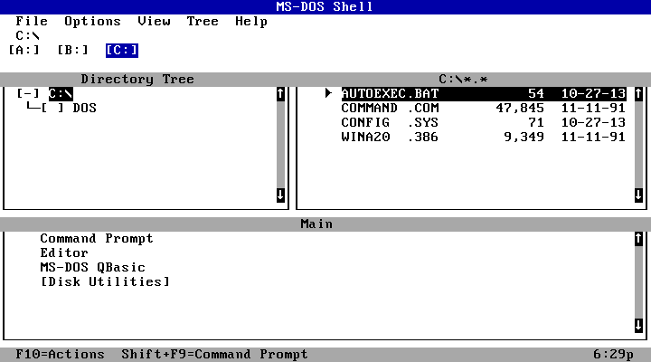
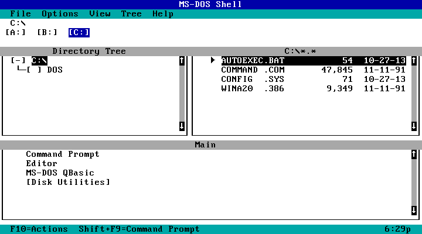
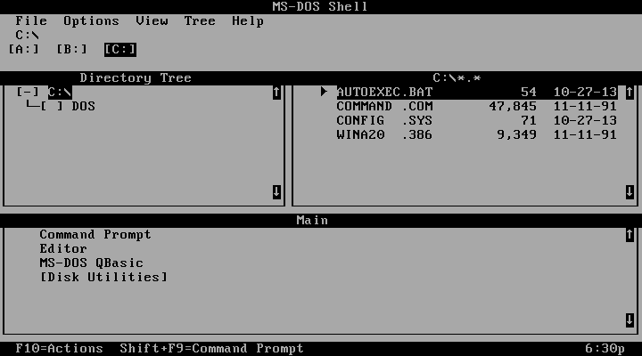
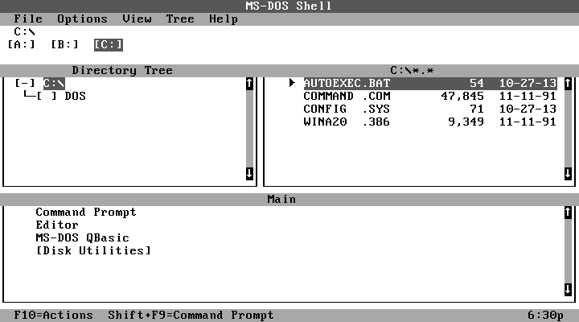
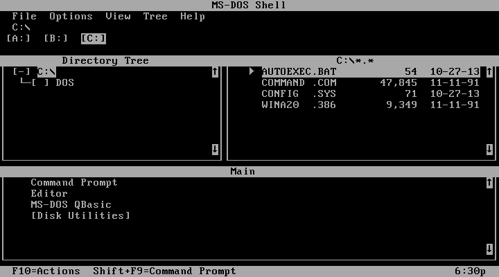
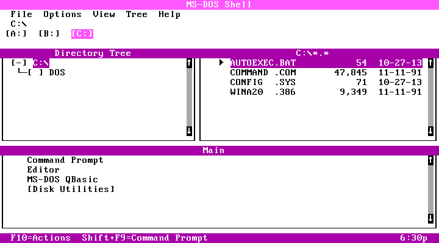
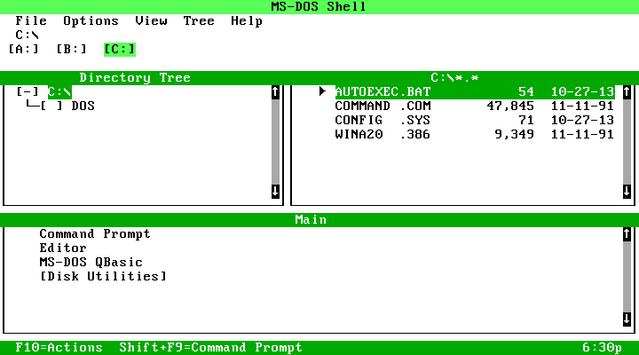
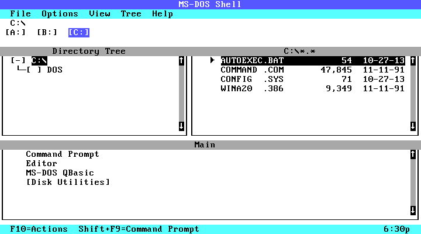

Basic Blue

Ocean

Monochrome-2 colors

Monochrome-4 colors

Reverse

Hot Pink

Emerald

Turquoise
MS-DOS Shell Color Schemes
In order:
Basic Blue, Ocean, Monochrome-2 colors, Monochrome-4 colors, Reverse, Hot Pink, Emerald City, Turquoise
Ocean is the default color scheme.